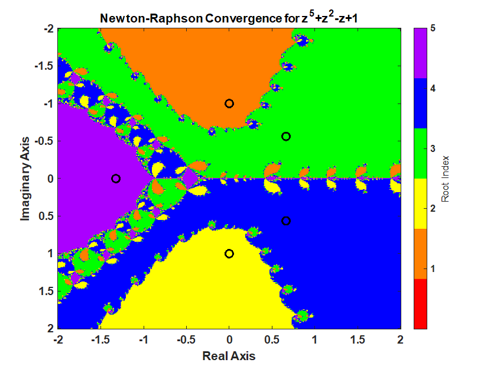

Trust-Region-Dogleg and Newton-Raphson - A Quick Comparison on a 5th order polynomial
A Newton-Raphson iteration produces a fractal pattern in the complex plane and a Trust-Region-Dogleg method produces a smoother pattern in the complex which is desirable for a nonlinear equation solver. The context of this statement is finding the roots of a polynomial in a complex plan from different starting points. The inspiration for this post was the video from 3Blue1Brown, Newton's Fractal (which Newton knew nothing about).
Given the polynomial
\[P(z) = z^5 + z^2 - Z + 1 = 0\]find a root starting from anywhere in the interval of -2 to 2 and -2i to 2i.
Common code:
clc;clear; close all;
% setup polynomial function
coefficients = [1 0 0 1 -1 1];
polynomialFunction = @(z) polyval(coefficients, z);
% setup the derivative of the polynomial function
coefficients_dot = polyder(coefficients);
polynomialDerivativeFunction = @(z) polyval(coefficients_dot, z);
% roots of the polynomial. roots uses a eigenvalues of a companion matrix approach.
% rootsOfPolynomial = roots(coefficients);
% exact roots
rootsOfPolynomial(1) = -1i;
rootsOfPolynomial(2) = 1i;
rootsOfPolynomial(3) = (2^(2/3)*(3^(1/3) - 3^(5/6)*1i)*(69^(1/2) + 9)^(1/3))/12 + (2^(2/3)*3^(1/3)*(9 - 69^(1/2))^(1/3))/12 + (2^(2/3)*3^(5/6)*(9 - 69^(1/2))^(1/3)*1i)/12;
rootsOfPolynomial(4) = (2^(2/3)*(3^(1/3) + 3^(5/6)*1i)*(69^(1/2) + 9)^(1/3))/12 + (2^(2/3)*3^(1/3)*(9 - 69^(1/2))^(1/3))/12 - (2^(2/3)*3^(5/6)*(9 - 69^(1/2))^(1/3)*1i)/12;
rootsOfPolynomial(5) = -(2^(2/3)*3^(1/3)*((69^(1/2) + 9)^(1/3) + (9 - 69^(1/2))^(1/3)))/6;
% Calculate a grid of starting points using the ndgrid format. x (real part)
% follow rows (1st dimension) and y follows the columns (2nd dimension).
% ndgrid is format is transpose of meshgrid format. meshgrid format is used
% for plotting surfaces.
nStartingPointReal = 400;
nStartingPointImaginary = 401;
startingPointReal = linspace(-2,2,nStartingPointReal)';
startingPointImaginary = linspace(-2,2+eps(2),nStartingPointImaginary)*1i;
startingPoint = startingPointReal + startingPointImaginary; % using singleton expansion
maxIterations = 100;
functionTolerance = 1e-14;
divideByZeroTolerance = 1000; % 1000*eps(p)Newton-Raphson Iteration
Using Newton's method starting anywhere in the interval -2 to 2 and -2i to 2i produces the following pattern.
% setup for iteration
isConverged = false(nStartingPointReal, nStartingPointImaginary);
isDivideByZero = false(nStartingPointReal, nStartingPointImaginary);
whileFlag = true;
iteration = 0;
z = startingPoint;
% check if the starting value was already converged.
% polynomial is less then functionTolerance.
p = polynomialFunction(z(~isConverged));
isConverged(~isConverged) = abs(p) < functionTolerance;
% begin iteration
p = polynomialFunction(z(~isConverged));
while whileFlag
% increment iteration number
iteration = iteration + 1;
p = polynomialFunction(z(~isConverged));
% Calculate the derivative of the polynomial.
% Check for divide by 0. If p_dot is close to machine precision
% of p, then its a divide by 0 error.
% Stop all further iteration.
p_dot = polynomialDerivativeFunction(z(~isConverged));
isDivideByZeroIteration = abs(p_dot) < divideByZeroTolerance*eps(abs(p));
isDivideByZero(~isConverged) = isDivideByZeroIteration;
isConverged(~isConverged) = isDivideByZeroIteration;
% calculate Newton iteration on unconverged points.
z(~isConverged) = z(~isConverged) - p(~isDivideByZeroIteration)./p_dot(~isDivideByZeroIteration);
% check for convergence
p = polynomialFunction(z(~isConverged));
isConverged(~isConverged) = abs(p) < functionTolerance;
% set while flag
% all roots have converged or reached max iterations
whileFlag = iteration <= maxIterations || all(all(~isConverged));
end
% successful roots
isRoot = isConverged & ~isDivideByZero;
% which root did newton's method converge too?
% calculate the difference between the converged root and the roots of the polynomial
% the smallest distance corresponds to the root index
zDiff = abs(z - reshape(rootsOfPolynomial,1,1,[])); % using singelton expansion
[rootErrors,rootIndex] = min(zDiff,[],3); % minimum along 3rd dimension
rootIndex(~isRoot) = 0;
% create the fractal image
% imagesc uses the meshgrid format where
% x is the 2nd dimension
% y is the first dimension
% therefore, transpose rootIndex because its in the ndgrid format
figure;
imagesc(startingPointReal', imag(startingPointImaginary), rootIndex')
c = prism(numel(rootsOfPolynomial)+1);
colormap(c);
xlabel("Real Axis"); ylabel("Imaginary Axis")
ylabel(colorbar('Ticks',1:numel(rootsOfPolynomial)),"Root Index")
hold all;
plot(rootsOfPolynomial,'ko','MarkerSize',10,'LineWidth',3)
title("Newton-Raphson Convergence for z^5+z^2-z+1")
Trust-Region-Dogleg Iteration
The MATLAB fsolve() function uses the Trust-Region-Dogleg method to find a root of a nonlinear equation. What's interesting is how much smoother the boundaries are for the Trust-Region-Dogleg method.
More information on Trust-Region-Dogleg method
options = optimoptions('fsolve','Display',"none","SpecifyObjectiveGradient",true, ...
'FunctionTolerance',functionTolerance, 'StepTolerance',max(rootErrors(isRoot)),...
"Algorithm","trust-region-dogleg");
% calling fsolve with the first argument as a cell array is undocumented but it works and is easy to setup. In a future
% version of MATLAB, this may not work because its undocumented. Also, each root is found one at a time and this is
% ver inefficient. This could be a lot better but that is not the focus of today.
%
tic;
[z2,~,exitflag2] = arrayfun(@(z0) fsolve({polynomialFunction,polynomialDerivativeFunction},z0,options),startingPoint);
toc;
Elapsed time is 406.891834 seconds.
% successful roots
isRoot2 = exitflag2 == 1;
% which root did the Trust-Region-Dogleg method converge too?
% calculate the difference between the converged root and the roots of the polynomial
% the smallest distance corresponds to the root index
zDiff2 = abs(z2 - reshape(rootsOfPolynomial,1,1,[])); % using singelton expansion
[rootErrors2,rootIndex2] = min(zDiff2,[],3); % minimum along 3rd dimension
rootIndex2(~isRoot2) = 0;
% create the fractal image
% imagesc uses the meshgrid format where
% x is the 2nd dimension
% y is the first dimension
% therefore, transpose rootIndex2 because its in the ndgrid format
figure;
imagesc(startingPointReal', imag(startingPointImaginary), rootIndex2')
colormap(c);
xlabel("Real Axis"); ylabel("Imaginary Axis")
ylabel(colorbar('Ticks',1:numel(rootsOfPolynomial)),"Root Index")
hold all;
plot(rootsOfPolynomial,'ko','MarkerSize',10,'LineWidth',3)
title("Trust-Region-Dogleg Convergence for z^5+z^2-z+1")
CC BY-SA 4.0 Jason H. Nicholson. Last modified: November 18, 2025. Website built with Franklin.jl and the Julia programming language.